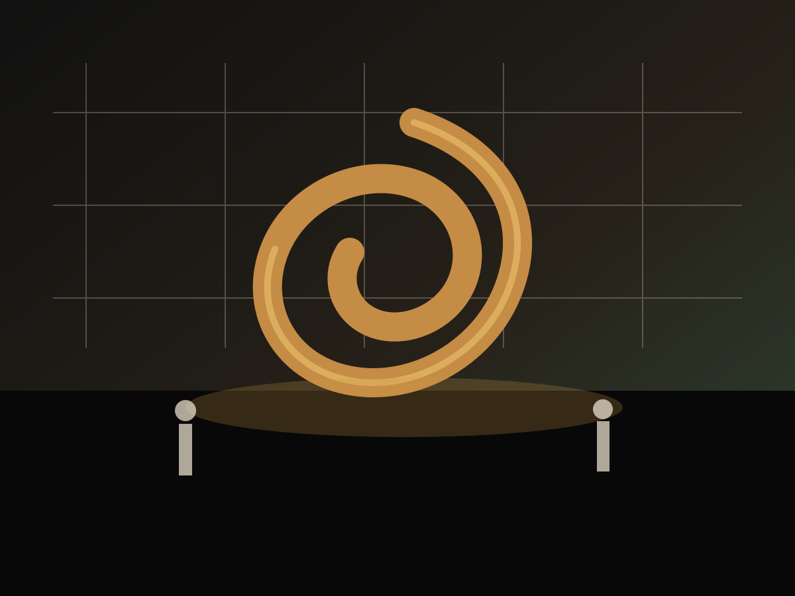
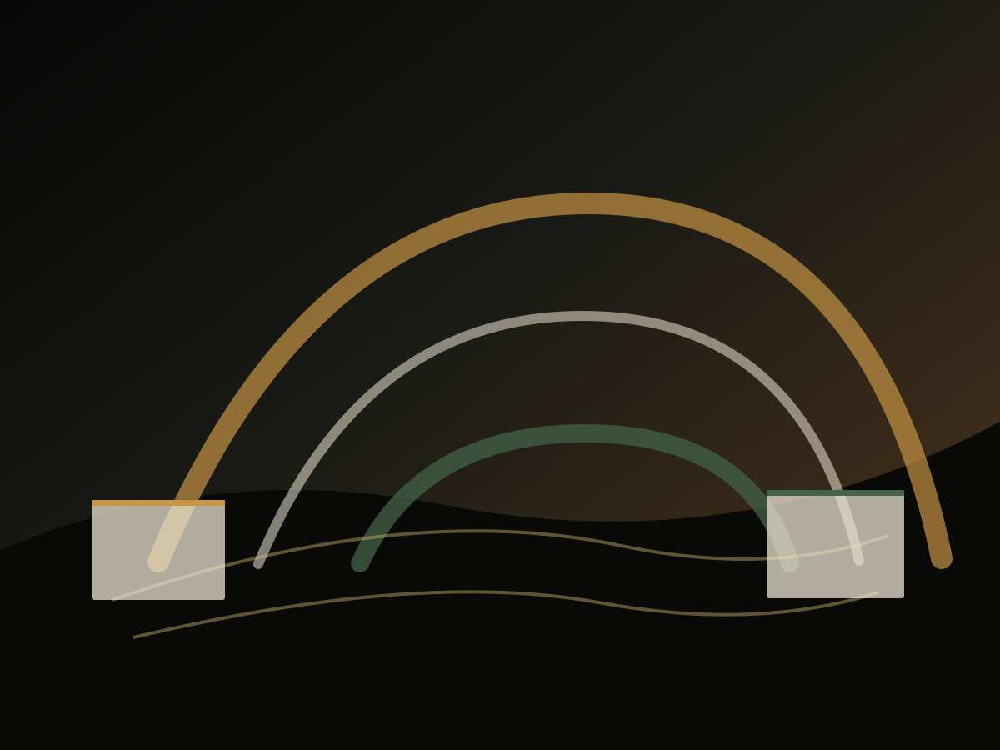

National Science Center
Interactive galleries, visitor sequencing, educational hardware, and immersive science storytelling.
Open case studyPortfolio
Interactive galleries, visitor sequencing, educational hardware, and immersive science storytelling.
Open case study
Natural habitat installations, species models, and interpretive field graphics.
Open case study
Large-format prehistoric models, timelines, fossil interpretation, and theatrical landscape moments.
Open case study
Indoor-outdoor visitor flow, exhibit panels, tactile moments, and public learning zones.
Open case study
Landmark sculpture, civic identity, lighting strategy, and durable public interaction.
Open case study
Mixed reality interpretation, kiosk interfaces, interactive software, and multi-language content.
Open case study
Immersive theming, scenic fabrication, wayfinding, interactive stops, and public photo moments.
Open case studyCase study anatomy
Briefs often begin as fragmented content, underused sites, complex public mandates, or subjects that feel too technical for general audiences.
We convert those inputs into a clear visitor journey: entry sequence, primary story, tactile engagement, digital interaction, memory point, and institutional handover.